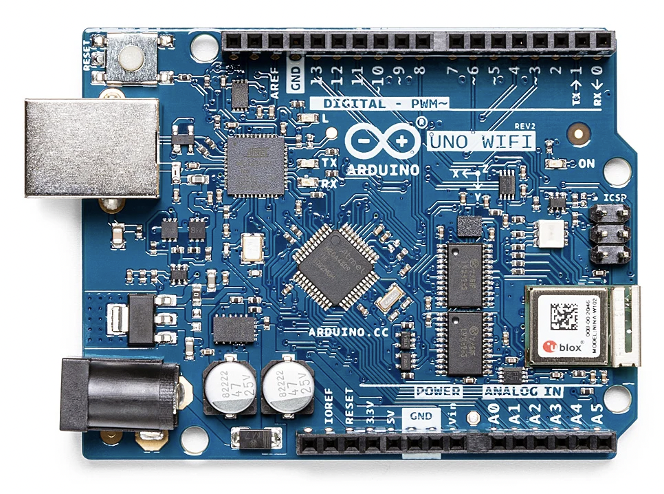

Arduino UNO R3 WiFi Rev2
The Arduino UNO WiFi Rev2 combines an 8-bit ATmega4809 microcontroller with a u-blox NINA-W102 radio module. It keeps
the familiar UNO form factor and 5 V GPIO while adding Wi-Fi, Bluetooth, a secure element and a six-axis IMU. Juno
compiles for the ATmega4809 with its AVR backend and links against the arduino:megaavr core and the WiFiNINA
library; the ArduinoUno device facade is the entry point for the board's peripherals.

Core specification
| Characteristic | UNO WiFi Rev2 |
|---|---|
| Product SKU | ABX00021 |
| Main microcontroller | Microchip ATmega4809 |
| CPU architecture | 8-bit megaAVR |
| CPU clock | 16 MHz |
| Program flash | 48 kB |
| SRAM | 6,144 bytes |
| EEPROM | 256 bytes |
| Logic and operating voltage | 5 V |
| Digital I/O | 14 pins, D0-D13 (5 with PWM) |
| Analog inputs | 6 pins, A0-A5 |
| USB connector | USB Type-B |
| Built-in LED | Logical Arduino pin 25 |
| Radio module | u-blox NINA-W102 (Wi-Fi and Bluetooth) |
| Secure element | Microchip ATECC608A |
| IMU | STMicroelectronics LSM6DS3TR |
| Arduino CLI FQBN | arduino:megaavr:uno2018 |
| Juno board id | arduino-uno-r3-wifi-rev2 |
What Juno supports
| Feature | Status | Notes | Example |
|---|---|---|---|
Gpio, DigitalOutput, Delay, Clock, Random |
✓ | getBuiltinLed() is logical pin 25. |
Blink |
analogRead, analogWrite |
✓ | Analog reads on A0–A5 through the 10-bit ADC; PWM output on D3, D5, D6, D9 and D10. | |
Serial |
✓ | ||
| Classes, interfaces, inheritance, exceptions | ✓ | Inheritance, Exceptions |
|
Threads, synchronized, ReentrantLock, atomics, StructuredTaskScope, ScopedValue |
✓ | At most four threads including main. |
ThreadStartAndJoin, Locks |
BigInteger, BigDecimal, MathContext |
✓ | Limited by the 1 KB arena (3 KB at most, -Djuno.Xmx=3k). |
|
UUID.randomUUID() |
✓ | The ATECC608A secure element's random-number generator. | |
@Watchdog |
✓ | ATmega4809 hardware watchdog, at most about 8.2 seconds. | |
| Bluetooth LE (LEGO Powered Up) | – | Not possible on this board, and not an omission. The NINA-W102 has a radio, but ArduinoBLE alone takes about 46.6 KB of the 48 KB flash on the megaAVR core, so a program that uses BLE does not fit. | |
Wifi, Udp, SNTP |
✓ | Through WiFiNINA. |
SntpTimeSD |
HttpServer (plain HTTP) |
✓ | A WiFiNINA server on the station address, one request at a time; no HTTPS. Build with -Djuno.Xmx=3k. |
HttpServerStatusSDTFT |
HttpClient (HTTP and HTTPS), Json |
✓ | TLS runs on the NINA-W102, which trusts the root certificates in its firmware. | SingleHttpsGet |
Smtp.sendTls, Pop3Client |
✓ | Implicit TLS on the NINA-W102 (usually ports 465 and 995). | |
SdCard, Properties |
✓ | On a shield's microSD slot; at most 2 open files, Properties of 8 entries. |
StorageOccupancy |
| TFT Touch, Grove Base, 9 Axis Motion, LCD Keypad and Data Logger shields | ✓ | See Shields. | |
ArduinoUno.getGyroscope(), ArduinoUno.getAccelerometer() (LSM6DS3TR, over ArduinoUno.getSpi()) |
✓ | Heading and yaw rate from the gyroscope, acceleration on each axis from the accelerometer; no magnetometer, so the heading is integrated gyro yaw and drifts. | OnboardImuSerial |
Servo, Infrared, RandomAccessFile |
Untested | Generated, but not yet run in the simulator or on hardware. |
Features
These need only the UNO WiFi Rev2 and its USB cable.
Blink the built-in LED
getBuiltinLed() is logical pin 25 on this board, not D13:
DigitalOutput led = DigitalOutput.of(ArduinoUno.getGpio().getBuiltinLed());
while (true) {
led.high();
Delay.millis(500);
led.low();
Delay.millis(500);
}
Blink is the complete program; it builds for any board, so pass
-Djuno.board=arduino-uno-r3-wifi-rev2.
Read the onboard IMU
The board's LSM6DS3TR accelerometer and gyroscope sit on the SPI bus. ArduinoUno.getGyroscope() and
ArduinoUno.getAccelerometer() return the same sensor as two interfaces. The first call starts it, which measures the
gyroscope's bias for about 2 s, so keep the board still then:
Gyroscope gyroscope = ArduinoUno.getGyroscope();
Accelerometer accelerometer = ArduinoUno.getAccelerometer();
while (true) {
Serial.print(gyroscope.getAngle()); // heading in whole degrees, clockwise from startup
Serial.print(accelerometer.getXAccel()); // whole m/s² along the board's X axis
Delay.millis(200);
}
The sensor has no magnetometer, so the heading is the gyroscope's yaw rate integrated from power-up, clockwise positive.
It drifts a little with every minute of use; gyroscope.reset() sets it back to zero. If the sensor does not answer, its
readings stay 0. OnboardImuSerial
prints all four values; build it with -Djuno.board=arduino-uno-r3-wifi-rev2.
Shields
Seat each shield directly on the UNO WiFi Rev2. Check which pins a shield uses before stacking two: the LCD Keypad Shield's backlight and the Data Logger Shield's SD chip select are both D10. With 6 KB of RAM and 48 KB of flash, keep shield programs small; the larger TFT games written for the UNO R4 WiFi and UNO Q do not fit.
TFT Touch Shield

The ELEGOO 2.8" TFT touch shield is a 240 × 320 ILI9341 color display on an 8-bit parallel bus, with a resistive
touch panel and a microSD socket; it needs no extra Arduino library. TftTouchShield draws through ParallelBus, a
compiler intrinsic that streams pixels from the runtime instead of costing one digitalWrite per pin. The TFT Touch Shield
API, wiring and touch calibration are on the Arduino Shields page.
TftTouchShield tft = new TftTouchShield();
tft.begin();
tft.setRotation(TftTouchShield.LANDSCAPE);
tft.fillScreen(TftTouchShield.BLACK);
tft.setCursor(10, 10);
tft.setTextSize(2);
tft.setTextColor(TftTouchShield.YELLOW, TftTouchShield.BLACK);
tft.print("Hello, Juno");
while (true) {
if (tft.readTouch()) {
tft.fillCircle(tft.touchX(), tft.touchY(), 3, TftTouchShield.WHITE);
}
}
TouchPaintTFT is a finger-paint program; it builds for any board, so pass
-Djuno.board=arduino-uno-r3-wifi-rev2.
Grove Base Shield

The Grove Base Shield is passive: every socket is an ordinary UNO pin, and GroveBaseShield names them so programs
don't hard-code numbers. Plug a Grove module in and pass the socket's getter to its driver; the socket supplies the
module's GND and VCC. A Grove DHT22 temperature and humidity sensor in the D4 socket:
GroveBaseShield shield = new GroveBaseShield();
GroveDht22 dht = new GroveDht22();
int[] reading = new int[GroveDht22.READING_LENGTH];
int[] frame = new int[GroveDht22.FRAME_LENGTH];
if (dht.read(shield.getD4(), reading, reading.length, frame, frame.length)) {
Serial.print(reading[GroveDht22.TEMPERATURE_TENTHS_CELSIUS]);
Serial.println(" tenths of a degree");
}
GroveDht22Monitor prints a DHT22's readings, and
GroveSensorBatchMonitor several Grove sensors at once. See
Grove for the sensor drivers.
Arduino 9 Axis Motion Shield

The shield's Bosch BNO055 fuses its accelerometer and gyroscope itself and reports the heading in degrees.
NineAxisMotionShield reads it over I2C as plain Java, with no Arduino library. The heading is relative to the direction
the sensor pointed at begin(). begin() drives D7, the sensor's reset line, so don't use D7 for anything else:
NineAxisMotionShield imu = new NineAxisMotionShield();
if (imu.begin()) {
imu.reset(); // count the turn from here
while (true) {
Serial.println(imu.getAngle()); // heading since the reset, whole degrees, clockwise
Delay.millis(200);
}
}
NineAxisMotionShieldSerial prints heading, yaw rate and acceleration readings.
LCD Keypad Shield

A 16 × 2 character LCD with five buttons read through one analog pin (A0). LcdKeypadShield needs no extra library:
the LCD uses D4-D9 and its backlight D10.
LcdKeypadShield lcd = new LcdKeypadShield();
lcd.begin();
lcd.print("Hello, Juno");
while (true) {
if (lcd.readButton() == LcdKeypadShield.SELECT) {
lcd.setCursor(0, 1);
lcd.print("SELECT pressed");
}
Delay.millis(100);
}
LcdKeypadDemo shows each button press.
AZDelivery Data Logger Shield

A microSD socket on the UNO's SPI pins (chip select D10, MOSI D11, MISO D12, SCK D13), plus a DS1307 real-time clock
that Juno does not drive. Format the card as FAT16 or FAT32. Keep the network's credentials on the card rather than
in the source: put wifi.ssid and wifi.password in application.properties at the card's root, then:
SdCard sd = new DataLoggerShield().getSdCard();
Wifi wifi = ArduinoUno.getWifi();
if (sd.begin()) {
try (InputStream file = sd.open("application.properties")) {
if (file != null) {
Properties properties = new Properties();
properties.load(file);
wifi.begin(properties.getProperty("wifi.ssid"), properties.getProperty("wifi.password"));
}
}
}
SntpTimeSD joins the network this way and prints the time from an SNTP server;
StorageOccupancy reports the card's used and free space.
Build and run
Install the megaAVR core and the WiFiNINA library once, and run juno:install-deps for SdFat and the other
optional libraries. Then compile and upload an example, for instance the thread start-and-join demo:
arduino-cli core install arduino:megaavr
arduino-cli lib install WiFiNINA
./mvnw -f juno-examples/pom.xml juno:install-deps
./mvnw -f juno-examples/pom.xml compile juno:upload \
-Djuno.main=io.github.jabrena.juno.language.concurrency.ThreadStartAndJoin \
-Djuno.board=arduino-uno-r3-wifi-rev2
Open the serial monitor in another terminal:
./mvnw -f juno-examples/pom.xml juno:monitor \
-Djuno.board=arduino-uno-r3-wifi-rev2
The monitor uses 115200 baud by default, matching Serial.begin(BaudRate.BAUD_115200).